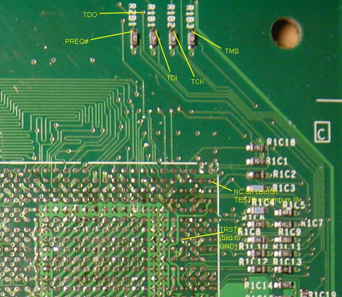

JTAG FOR XBOX
JTAG, an acronym for Joint Test Action Group, is the usual name used for the IEEE 1149.1 standard for Test Access
Port and Boundary Scan, primarily used for testing integrated circuits, but also useful as a mechanism
for debugging embedded systems.
A JTAG interface is a special
four-pin (data in, data out, TCK, TMS)
interface added to a chip, designed so that multiple chips on a board
can have their JTAG lines daisy-chained together, and a test probe need
only connect to a single "JTAG port" to have access to all chips on a
circuit board.
Since only the one data line is
available, the protocol is necessarily serial. The clock input is at
the TCK pin. Configuration is performed by manipulating a state machine
one bit at a time through a TMS pin. One bit of data is transferred in
and out per TCK clock pulse at the TDI and TDO pins, respectively.
Different instruction modes can be loaded to read the chip ID, sample
input pins, drive (or float) output pins, manipulate chip functions, or
bypass (pipe TDI to TDO to logically shorten chains of multiple chips).
The operating frequency of TCK varies depending on the chip, but it is
typically 10-100MHz (10-100ns per bit).
<>JTAG
LOCATIONS FOR XBOX

The image shows the key
JTAG pins
broken out to a set of resistors near the processor. Unfortuneately,
the TRST# signal is permanently tied to ground, at least on the
board tested. I'm not too familiar with the JTAG spec, but this
"optional" pin seems to cause the JTAG state machine to go into its
reset state. It needs to be pulsed low on power-on, but pulling it
permanently low (as it is on the Xbox) should permantently disable
the JTAG bus. Perhaps this was intentional? Who knows.
This is for experimental purposes only, I do not know if a JTAG will
even work with the Xbox. I know about JTAG ports for
Satellite and Cable Receivers, but nothing on the Xbox.